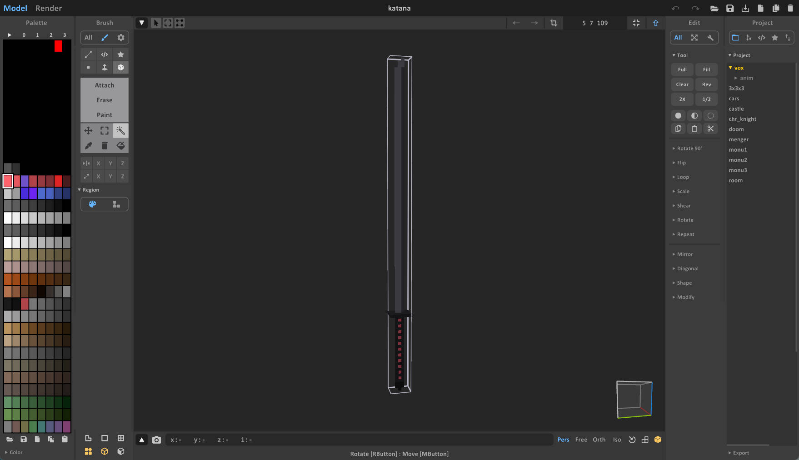
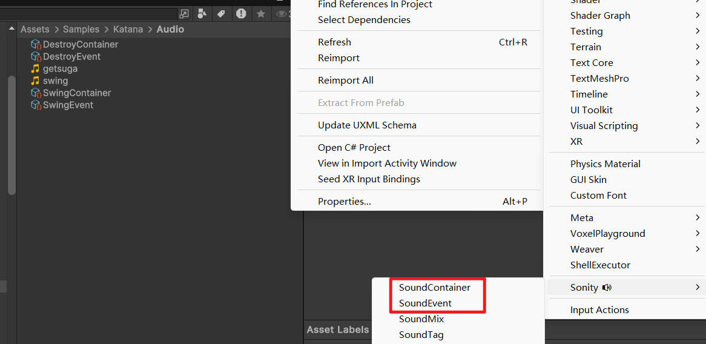
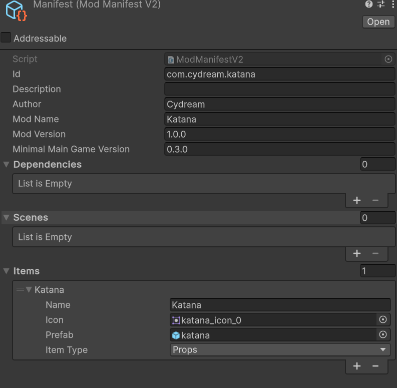

This tutorial explains the current Katana sample, which now lives in Assets/Samples/com.cydream.katana and is implemented in TypeScript.
Create or import a .vox katana model, then generate a prefab with the voxel import tools.

The generated prefab becomes the visual base for the weapon.
The sample katana reads sound references from JsProperties, so import and configure the Sonity assets you want to use for:

The current sample does not use a custom EntityKatana.cs MonoBehaviour. Instead:
Katana from Scripts/index.ts.JsComponentProxy to the katana prefab.Katana.EntityFirableWeapon) on the prefab.JsProperties entries for swingSoundEvent and destroySoundEvent.The Katana class resolves the built-in weapon component and registers trigger listeners through ModAPI.
The TypeScript sample expects:
Tip at the end of the blade, used to record the swing path.LineRenderer in the prefab hierarchy, used to display the active slash trail.If Tip is missing, the script falls back to the root transform, which makes slicing much less accurate.
The implementation in Scripts/katana.ts handles the entire slice mechanic from TypeScript:
Tip positions while the trigger is held.LineRenderer during the swing.PxPhysics.OverlapBoxNonAlloc.Representative setup:
export class Katana {
private bindTo: VX.Mod.JsComponentProxy;
private weapon: VX.Entity.EntityFirableWeapon;
constructor(bindTo: VX.Mod.JsComponentProxy) {
this.bindTo = bindTo;
this.weapon = bindTo.GetComponent(
puerts.$typeof(VX.Entity.EntityFirableWeapon)
) as VX.Entity.EntityFirableWeapon;
VX.Mod.ModAPI.AddWeaponTriggerPressedListener(
this.weapon,
() => this.onTriggerPressed()
);
}
}
The important migration point is that the gameplay behavior is no longer authored as a custom C# subclass. The prefab keeps its standard engine-side weapon component and TypeScript layers the custom cut behavior on top.
Open manifest.asset and add the katana prefab to Export Prefabs.

Lint the mod before exporting:
npm run lint:mod -- com.cydream.katana
Then verify the slice trail, hit detection, and sound bindings in-game: